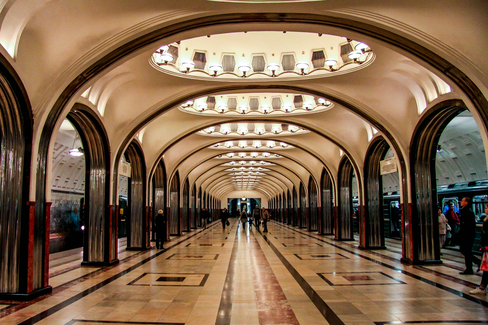
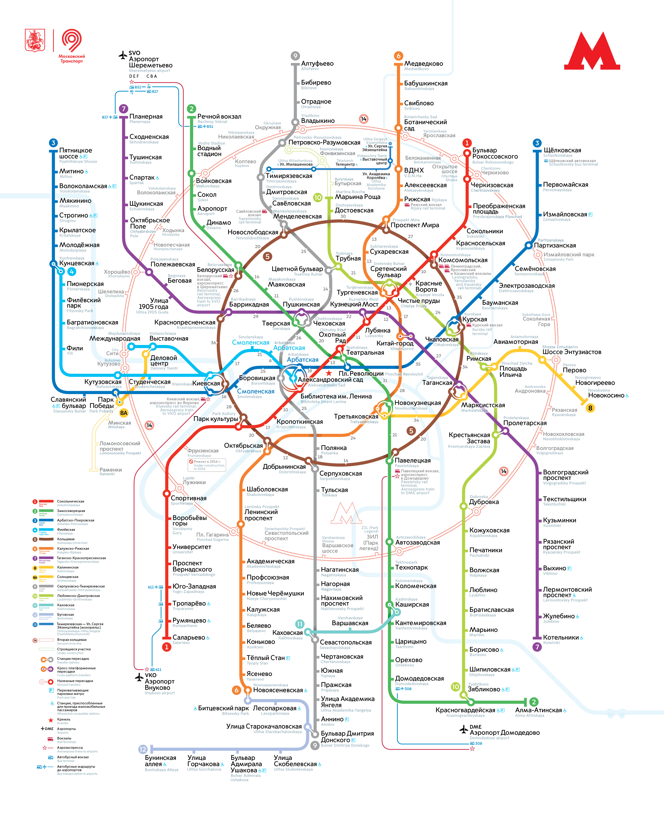

МОСКОВСКИЙ МЕТРОПОЛИТЕН
 |
Московский метрополитен – это рельсовый внеуличный (преимущественно подземный) городской общественный транспорт на электрической тяге, находящийся в Москве и частично в МО, первый и крупнейший метрополитен на постсовестском пространстве. Данный сайт разработан с целью рассказать об истории развития московского метрополитена, видах метропоездов, |
Подсказки
Номерной

Это один из типов Метро-поезда, у которого название "Номерной". Номерными они названы не просто так, а потому, что...
Узнать больше..«РУСИЧ»

А это уже русич. Великий и не повторимый. Курсирует на большинстве линий московского метрополитена.
Узнать больше..Карта Метро
Карта московского метрополитена огромная. Даже нормальных схем в виде картинок мало
Посмотреть на картусделали Лядов Тимофей и Никитин Станислав